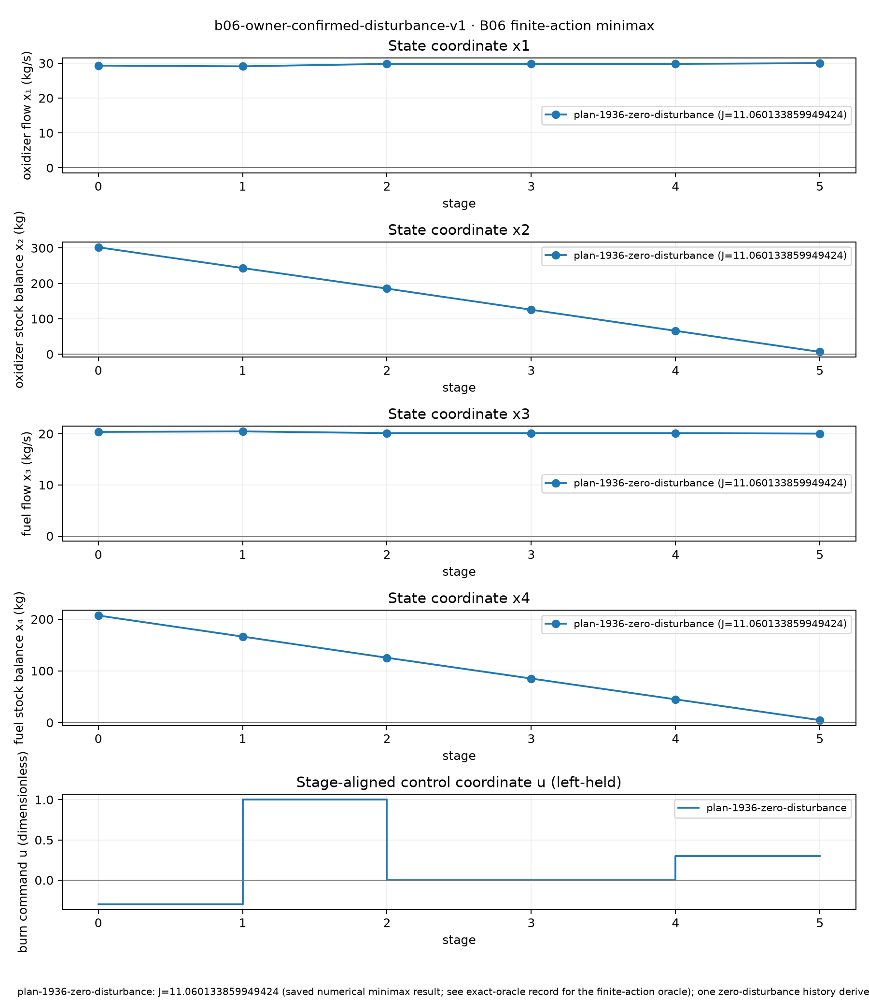
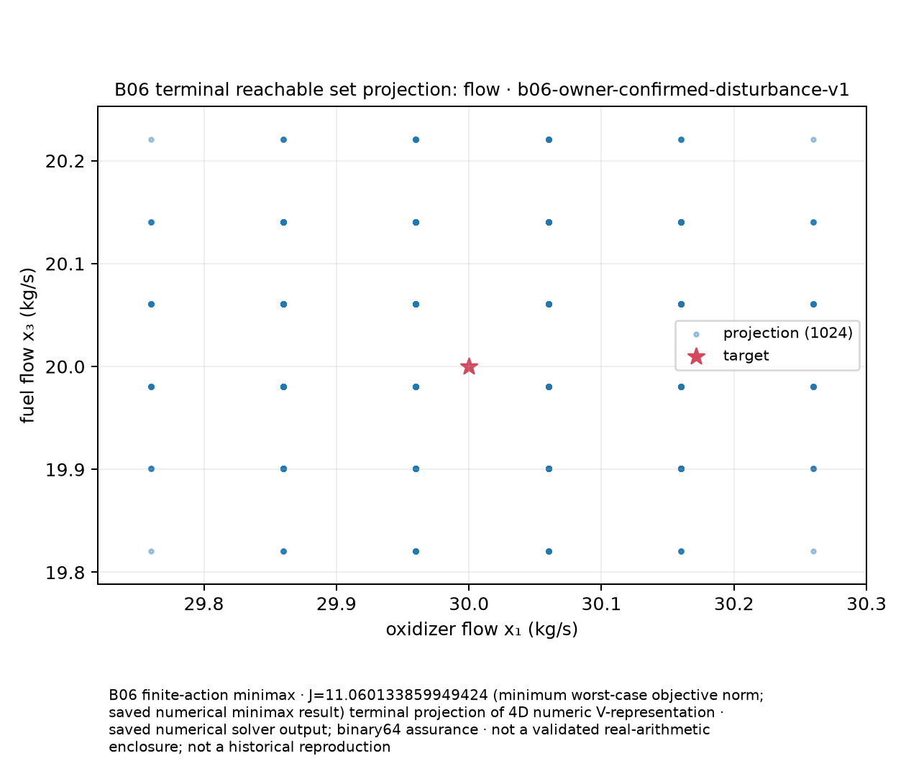
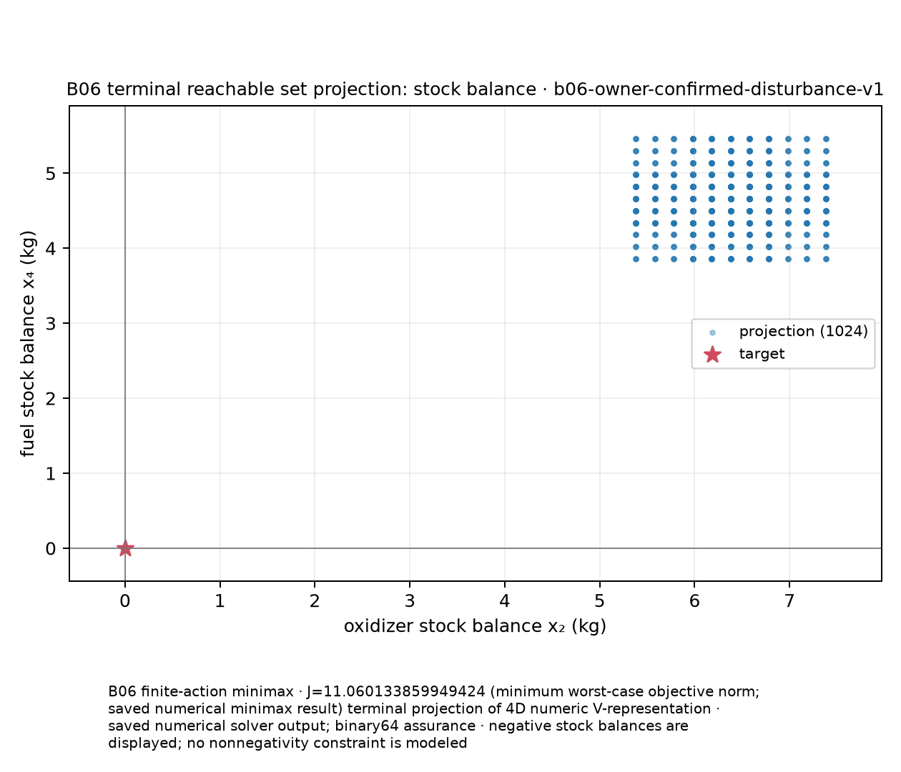
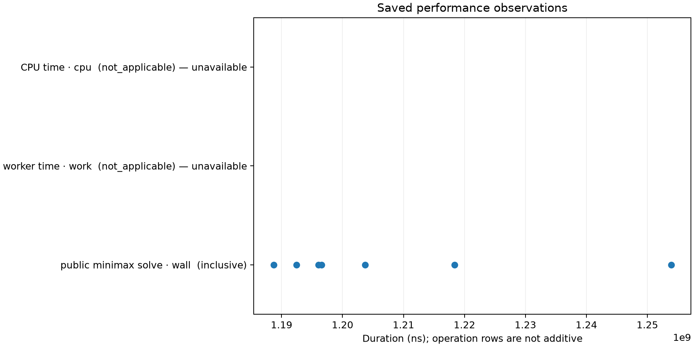

Controlled Systems Lab · B06 owner-confirmed reference
One four-dimensional terminal set, shown in two dimensions
Each saved terminal vertex has coordinates (x₁,x₂,x₃,x₄): oxidizer flow, oxidizer stock balance, fuel flow, fuel stock balance. The first two figures show the coordinate projections (x₁,x₃) and (x₂,x₄) of all 1,024 recorded vertices for the unique winning fixed plan. The star marks the target. The projection is a saved numerical V-representation, not a validated real-arithmetic enclosure or a historical reproduction.
The state/control figure shows one feasible zero-disturbance history derived in binary64 from the saved initial state and control catalogue plus the hashed B06 source-driver transition. The published scenario's A matrix has 15 entries for its declared 4×4 matrix; the figure does not silently repair or rewrite that immutable input. Its provenance binds both files. It has six state points and five left-held control intervals. It is one selected history, not a captured stage history or the full reachable family. The displayed minimax objective belongs to the plan's worst case; it is not the objective value of this particular history.




Reproducibility receipt: export versions, duration, and artifact hashes. The exported PNG/SVG files are checksummed by the receipt.
Inputs and reproduction
The source bundle and its assumptions are recorded in the B06 report. Inspect the saved terminal vertices and scenario assumptions. Recreate the saved figure document and all figures from the versioned records with:
python -m venv build/report-env
build/report-env/bin/pip install -r scripts/reports/requirements.txt
build/report-env/bin/python scripts/reports/adapt_fuel_record.py b06 \
reports/algorithm-results/b06-owner-confirmed-7df01ba3af5e4c46 build/fuel-b06.plot.json
build/report-env/bin/python scripts/reports/control_figures.py \
--input build/fuel-b06.plot.json --style scripts/reports/styles/control-v1.json \
--out build/fuel-b06-figuresRun timings exclude the warmup call. Rendering reads the saved values only; it does not rerun the minimax solver or any geometry operation. The saved terminal-set bundle contains no captured stage history; the separate trajectory figure derives one zero-disturbance witness from the bound model inputs and selected plan.